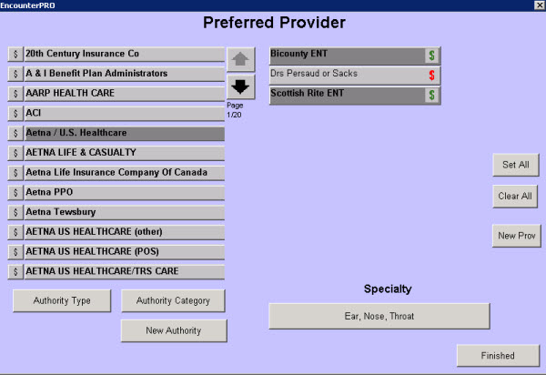

|
Description
This screen allows a practice to attach a consultant from the Consultants list to an insurance carrier to indicate which insurance that consultant accepts.
Linking consultants to insurance carriers is helpful for the providers and referral coordinators. When a referral is ordered, the user will see a green $ for consultants who accept the patient's insurance. A red $ displays for the consultants who do not accept the patient's insurance (or have not been set up as a preferred provider on this screen).
How to Access This Screen
From the Configuration tab access this screen by selecting Preferred Provider on the Configuration list.
Screen Example

Want to Learn More?
Related Solutions
How to: Order a Referral
How to: Schedule Follow-ups and Referrals
How to: Add a New Consultant
|